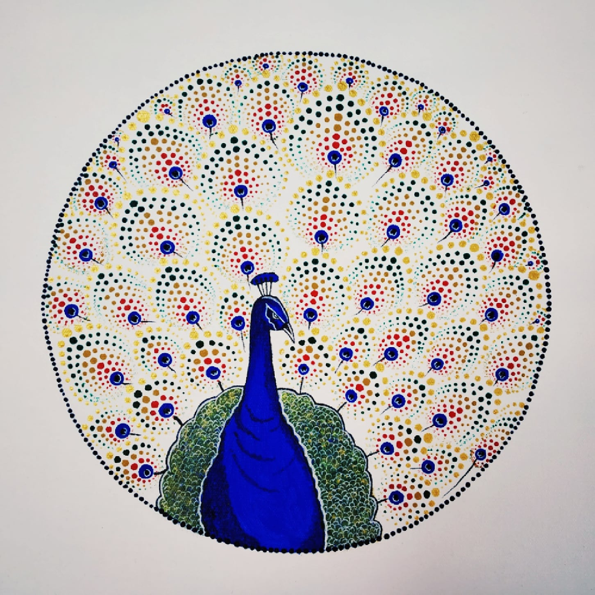

PEACOCK MANDALA
In frame is a beautiful peacock mandala dot art on a white canvas.
I have tried to show how elegant a peacock looks.
This bird is known as national bird of India.
The feathers of the peacock are following the same pattern of colours.
They are so colourful and has so many colours which enhances the look of the peacock.
They have a unique quality, they dance when in rains by opening their feathers and that site of them dancing is very fascinating to watch.
Materials Required :
1 Canvas (16*16) inch.
paint brush.
Dark blue, teal green, golden, red, ochre yellow, dark green, turquoise blue, white acrylic colour’s.
Mandala dot art tools.
Any circular object / a compass.
steps one can follow(if needed) :
First take a plain canvas and draw a circle.
After that is done just draw a peacock and paint the peacock using navy/turquoise blue.
After the painting of peacock is done , outline the peacock's eyes with white paint.
And then start with mandala art for feathers, follow a constant pattern starting with blue , red, ochre yellow, green , golden.
Then at the end just outline the circle with black dots using mandala tool.